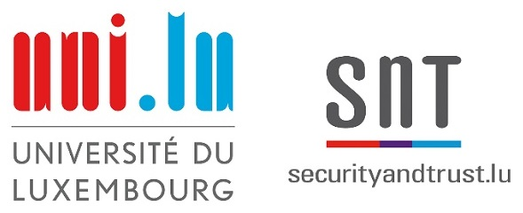
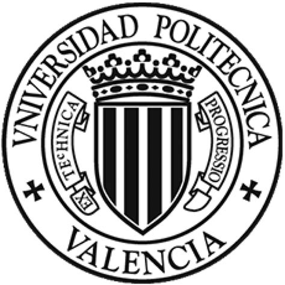
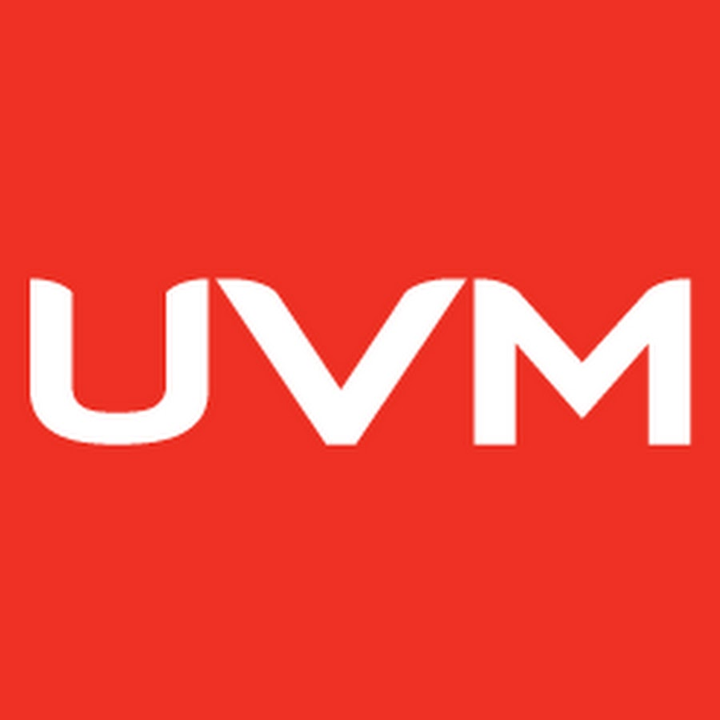

Sobre mí
Investigador Asociado en la Universidad de Luxemburgo.
Graduado de la Licenciatura en Sistemas Computacionales por la Universidad Autónoma de Chiapas (UNACH). Maestría en Ingeniería de Sistemas por la Universidad del Valle de México (UVM). Máster Universitario en Ingeniería de Computadores y Redes, y Doctor en Informática por la Universitat Politècnica de València (UPV).
He participado en proyectos de I+D+I relacionados con Community Netwoks, ICT4D, Smart Cities e Internet of Things, diseñando y desarrollando soluciones de redes de comunicaciones. Mi actividad investigadora está relacionada con el uso de redes inalámbricas móviles para el diseño de sistemas dinámicos.
Actualmente, soy Investigador Asociado, en la Universidad de Luxemburgo, en el Centro Interdisciplinario de Seguridad, Fiabilidad y Confianza (SnT), y miembro del grupo de Servicios y Gestión de Datos (SEDAN).
Me considero una persona curiosa por la tecnología, perseverante y colaborativa.

Educación
-

2018 - 2022
Doctorado en Informática
Universitat Politècnica de València (UPV).
Valencia, C. Valenciana, España.
Desarrollamos un sistema de mensajería para redes comunitarias, basado en dispositivos IoT, integrando edge computing y tecnologías pub/sub. Todos nuestros avances se publicaron en revistas científicas y conferencias internacionales. -
2017 - 2018
Máster Universitario en Ingeniería de Computadores y Redes
Universitat Politècnica de València (UPV).
Valencia, C. Valenciana, España.
Durante el máster, adquirí conocimientos sobre IoT, smart cities, redes de altas prestaciones, clusters de computadores y sistemas empotrados. Además, conseguí habilidades para la lectura y escritura de artículos científicos. -

2009 - 2011
Maestría en Ingeniería de Sistemas
Universidad del Valle de México (UVM).
Tuxtla Gutiérrez, Chiapas, México.
Aprendí a emplear herramientas, procesos y metodologías efectivas para mejorar constantemente los procesos en las organizaciones. -
2002 - 2006
Licenciatura en Sistemas Computacionales
Universidad Autónoma de Chiapas (UNACH).
Tuxtla Gutiérrez, Chiapas, México.
A lo largo de mis años en la UNACH, obtuve conocimientos generales sobre hardware, redes de computadores, diseño y administración de sistemas, bases de datos (MySQL, Oracle) y desarrollo de software (C++, VB, .NET, PHP).
Experiencia
Dentro de mis actividades de carácter profesional destacan:
Experiencia Profesional
Investigador asociado
2023 - Presente
Universidad de Luxemburgo. Luxemburgo, Luxemburgo.
- Investigación industrial, visualización de datos, cartografía digital.
- Desarrollo de soluciones para la agricultura inteligente, utilizando microcontroladores y tecnologías inalámbricas de largo alcance.
- Difusión de resultados mediante artículos científicos.
Investigador de doctorado en Informática
2017 - 2022
Universitat Politècnica de València. Valencia, C. Valenciana, España.
- Diseño y desarrollo de un sistema de mensajería para redes comunitarias.
- Investigación científica.
- Difusión de resultados a través de artículos científicos.
Profesor Titular
2015 - 2017
Universidad Politécnica de Chiapas. Suchiapa, Chiapas, México.
- Impartición de clases en Ingeniería en Desarrollo de Software.
- Asesoría y tutoría a estudiantes.
- Desarrollo de proyectos.
Especialista de TI
2008 - 2015
Universidad Politécnica de Chiapas. Tuxtla Gutiérrez, Chiapas, México.
- Implementación de soluciones de red.
- Administración de software y herramientas.
- Solución de problemas de hardware y software.
Desarrollador .NET
2008
Universidad Autónoma de Chiapas. Tuxtla Gutiérrez, Chuiapas, México.
- Rediseño y desarrollo de sistema para control escolar.
- Análisis y administración de base de datos.
Proyectos
Cumbre Mundial del G20
2012
Cabo San Lucas, Baja California Sur, México.
- Diseño e implementación de soluciones de red.
- Gestión de recursos.
- Coordinación de recursos humanos.
VEX Robotics World Championship
2011
Orlando, Florida, EUA.
- Gestión de recursos.
- Asesoría a estudiantes.
Investigación
Proyectos I+D+I
Detección inalámbrica mediante la banda de frecuencia LoRa.Financiado por el Fondo Nacional de Investigación de Luxemburgo (FNR).
Soluciones para una gestión eficiente del tráfico vehicular basadas en sistemas y servicios de red (SETMAN).Financiado por el Ministerio de Ciencia e Innovación de España y el Fondo Europeo de Desarrollo Regional. Referencia: RTI2018-096384-B-I00-AR
Grupos de Investigación
Reconocimientos
Integrante senior de la Alianza Europea para la Innovación, clase 2021 (EAI).
Beca de formación para estudios doctorales CONACYT.
Revistas Internacionales
A LoRa-based protocol for connecting IoT edge computing nodes to provide small-data-based services.Kiyoshy Nakamura, Pietro Manzoni, Alessandro Redondi, Edoardo Longo, Marco Zennaro, Juan-Carlos Cano, Carlos T. Calafate. En Digital Communications and Networks, Vol. 8, 2022. (pp. 257-266).
I.F. 2020: 6.797; DOI: 10.1016/j.dcan.2021.08.007
LADEA: A Software Infrastructure for Audio Delivery and Analytics.Kiyoshy Nakamura, Daniel Hernández, José M. Cecilia, Pietro Manzoni, Marco Zennaro, Juan-Carlos Cano, Carlos T. Calafate. En Mobile Networks and Applications, Vol. 26, 2021. (pp. 2048-2054). I.F. 2020: 3.426; DOI: 10.1007/s11036-021-01747-z
A Low-cost and Low-Power Messaging System Based on the LoRa Wireless Technology.Angelica Moreno Cardenas, Miguel Kiyoshy Nakamura Pinto, Ermanno Pietrosemoli, Marco Zennaro, Marco Rainone, Pietro Manzoni. En Mobile Networks and Applications, Vol. 25, 2020. (pp. 961-968).
I.F. 2020: 3.426; DOI: 10.1007/s11036-019-01235-5
Congresos Internacionales
LoRaCTP: a LoRa based Content Transfer Protocol for sustainable edge computing.Kiyoshy Nakamura, Pietro Manzoni, Marco Zennaro, Juan-Carlos Cano, Carlos T. Calafate. Presentado en diciembre del 2020. En 16th International Conference on Mobility, Sensing and Networking (MSN ‘20). (pp. 539-545).
DOI: 10.1109/MSN50589.2020.00090
Integrating an MQTT Proxy in a LoRa-Based Messaging System for Generic Sensor Data Collection.Kiyoshy Nakamura, Pietro Manzoni, Marco Zennaro, Juan-Carlos Cano, Carlos T. Calafate. Presentado en octubre del 2020. En 19th International Conference on Ad Hoc Networks and Wireless (AdHoc-Now 2020). (pp. 282-294).
DOI: 10.1007/978-3-030-61746-2_21
FUDGE: a frugal edge node for advanced IoT solutions in contexts with limited resources.Kiyoshy Nakamura, Pietro Manzoni, Marco Zennaro, Juan-Carlos Cano, Carlos T. Calafate, José M. Cecilia. Presentado en septiembre del 2020. En 1st Workshop on Experiences with the Design and Implementation of Frugal Smart Objects (FRUGALTHINGS ‘20). (pp. 30-35). DOI: 10.1145/3410670.3410857
Adding voice messages to a low-cost long-range data messaging system.Kiyoshy Nakamura, Pietro Manzoni, Marco Zennaro, Juan-Carlos Cano, Carlos T. Calafate. Presentado en septiembre del 2020. En 6th EAI International Conference on Smart Objects and Technologies for Social Good (GoodTechs ‘20). (pp. 42-47).
DOI: 10.1145/3411170.3411238
A LoRa enabled sustainable messaging system for isolated communities.Angelica Moreno Cardenas, Miguel Kiyoshy Nakamura Pinto, Ermanno Pietrosemoli, Marco Zennaro, Marco Rainone, Pietro Manzoni. Presentado en noviembre del 2018. En 4th EAI International Conference on Smart Objects and Technologies for Social Good (GoodTechs ‘18). (pp. 118-123). DOI: 10.1145/3284869.3284888
Otras Conferencias
Añadiendo mensajes de voz a un sistema de mensajería de datos de largo alcance y bajo coste.Kiyoshy Nakamura, Pietro Manzoni, Carlos T. Calafate, Juan-Carlos Cano, Enrique Hernandez-Orallo. Presentado en septiembre del 2021. En Sociedad de Arquitectura y Tecnología de Computadores (SARTECO 20/21), en las XXXI Jornadas de Paralelismo (JP20/21). ISBN-13: 978-84-09-32487-3, pp. 405-410.
Sistema de mensajería viable para comunidades aisladas basado en LoRa.Miguel Kiyoshy Nakamura Pinto. Presentado en diciembre 2020. En el 9º Simposio de Becarios CONACYT en Europa. (CONACYT-MUFRAMEX) pp. 130-133.
Un sistema de mensajería viable para comunidades aisladas basado en LoRa.Kiyoshy Nakamura, Pietro Manzoni, Carlos T. Calafate, Juan-Carlos Cano, Enrique Hernandez-Orallo. Presentado en septiembre del 2019. En Sociedad de Arquitectura y Tecnología de Computadores (SARTECO 2019), en las XXX Jornadas de Paralelismo (JP2019). ISBN-13: 978-84-09-12127-4, pp. 374-380.
Tecnologías emergentes de comunicación de datos.Kiyoshy Nakamura. Presentado en octubre del 2019. En la 6ᵃ Feria Internacional del Libro UNACH 2019 (FIL-UNACH).
Coautores
Integrantes del grupo de investigación y coautores de mis contribuciones científicas.
Información de contacto
Ubicación:
Universidad de Luxemburgo, Campus Kirchberg.
Centro Interdisciplinario de Seguridad, Fiabilidad y Confianza (SnT).
Grupo de Servicios y Gestión de Datos (SEDAN).
Edificio SnT. Segunda planta, E02-208.